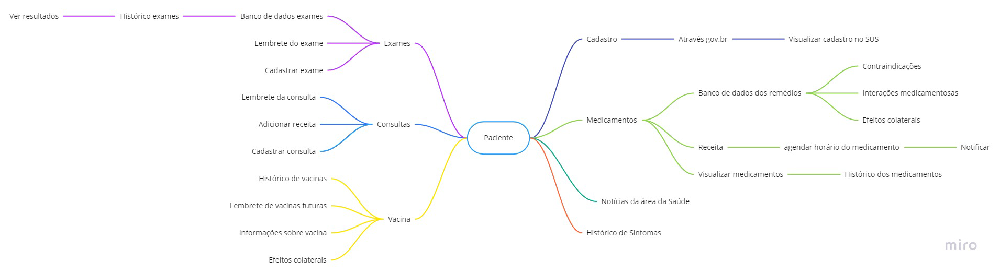

Brainstorming
Introdução
Brainstorming é uma técnica que funciona baseada no compartilhamento espontâneo de ideias, buscando encontrar alternativas para o problema proposto e/ou gerar insights. Para que o brainstorming consiga resultados satisfatórios é necessário que: seja completamente livre de críticas, pois toda ideia é válida; e tenha uma quantidade suficiente de participantes. O importante ressaltar que não se deve perder o foco do problema enquanto estiver na dinâmica.
Metodologia
Os membros do grupo se reuniram através de uma reunião realizada pelo Teams e com auxílio do Miro fomos anotando, agrupando e interligando as ideias de requisitos que o aplicativo possuiria.
Resultado
Por meio das ideias dos participantes e do acordo entre eles, os seguintes requisitos foram levantados:

Exames
- O usuário deve poder acessar os exames
Todos os participantes concordam que seria uma boa funcionalidade que o usuário pudesse visualizar os exames já cadastrados e cadastrar novos exames.
Consultas
- O usuário deve poder acessar as consultas
Assim como um alarme, todos os participantes concordam que seria uma boa funcionalidade que o usuário pudesse visualizar os consultas já cadastradas e ser notificadas adequadamente e ,também, cadastrar novos consultas.
Vacinas
- O usuário deve poder acessar as vacinas
Todos os participantes concordam que uma boa funcionalidade seria que o usuário conseguisse acessar as vacinas que ele já tomou e as que precisa tomar.
Medicamentos
- O usuário deve poder acessar medicamentos
Todos os participantes concordam que uma boa funcionalidade seria que o usuário conseguisse consultar os medicamentos cadastrados na base de dados e utilizá-la quando forem indicar quais medicamentos estão utilizando no momento.
Cadastrar
- O usuário deve poder cadastrar
O aplicativo deve permitir o usuário logar/deslogar de sua contar, pois ele deve ter acesso aos seus dados, caso o usuário trocar de aparelho.
Notícias
- O usuário deve poder visualizar as últimas notícias da área da saúde
O aplicativo disponibilizar notícias relacionadas à saúde e bem estar no geral.
Histórico de Sintomas
- O O usuário deve poder acessar o histórico de sintomas
Os participantes pensam que o usuário conseguir ver o histórico de sintomas seria uma funcionalidade importante, pois ajudaria o usuário analisar seus sintomas à algum medicamento.
Requisitos Elicitados
| ID | Requisito elicitado |
|---|---|
| #RF01 | O usuário pode cadastrar um exame |
| #RF02 | O usuário pode ver o resultado dos exames |
| #RF03 | O usuário deve ter acesso ao histórico de exames |
| #RF04 | O usuário pode agendar um lembrete para um exame |
| #RF05 | O O usuário deve poder acessar o histórico de sintomas |
| #RF06 | O usuário deve poder visualizar as últimas notícias da área da saúde |
| #RF07 | O usuário deve poder utilizar seu cadastro no gov.br |
| #RF08 | O usuário deve ter acesso às suas informações presentes no gov.br |
| #RF08 | Possuir um histórico de vacinação do usuário |
| #RF09 | Ter lembretes de vacinações futuras |
| #RF10 | Possuir informações sobre cada vacina |
| #RF11 | Saber efeitos colaterais das vacinas |
| #RF12 | O usuário pode cadastrar uma consulta |
| #RF13 | O usuário pode agendar um lembrete para uma consulta |
| #RF14 | O usuário pode adicionar a receita médica de uma consulta |
| #RF15 | Sugerir lista do SICLOM na pesquisa do remédio |
| #RF16 | Sugerir contra indicações quanto ao uso de certas medicações |
| #RF17 | Alertar o usuário quanto a efeitos colaterais |
| #RF18 | Agendar medicamento |
| #RF19 | Visualizar rendimento diário de uso de medicamento |
Versionamento
| Data | Versão | Alteração | Responsável(eis) |
|---|---|---|---|
| 19/08/2021 | 1.0 | Criação do documento | Gabriel Avelino, Guilherme Vial, Italo Fernandes, João Victor, Nathan Fernandes, Philipe Serafim |
Bibliografia
VAZQUEZ C. E.; SIMÕES G. S. Engenharia de Requisitos ed. Brasport, 2016.